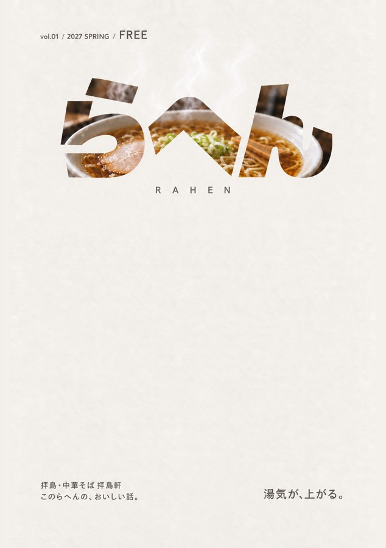
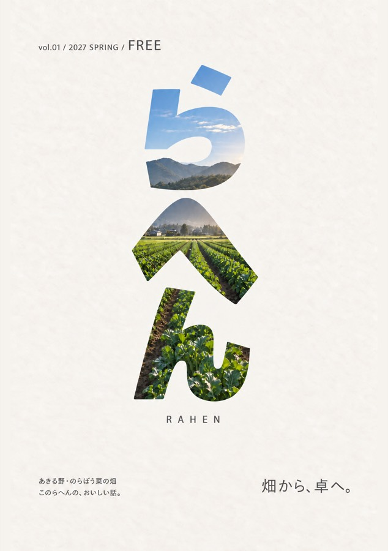
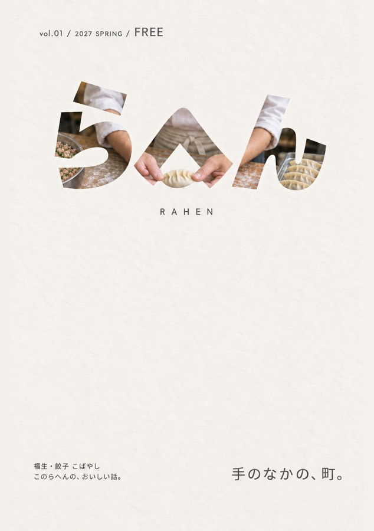
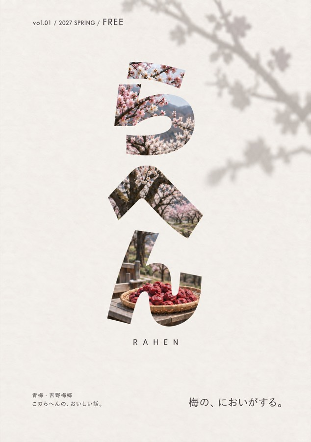
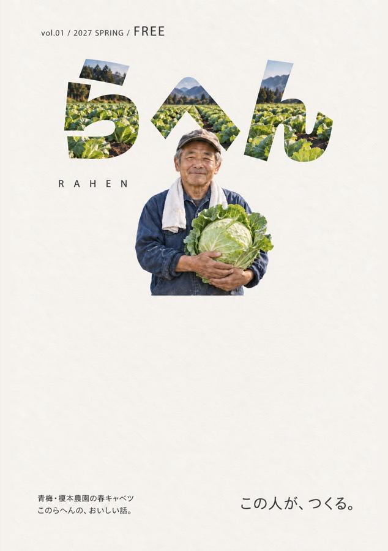
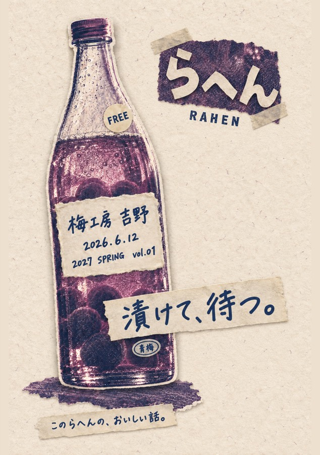

らへん表紙 v9〜v11 レビュー（2026-09-13）
v1〜v8と別軸の3バージョン。Pinterest実閲覧＋海外・東アジアのトレンド記事調査を踏まえ、ADが3軸を決め、軸ごとに8案を設計。現在10/24枚生成済み（v9=8、v10=2）。残り14枚はcodexのクレジット補充後に同じプロンプトで生成します。
v9 誌名が窓 8/8 生成済み
何をする表紙か: 巨大な「らへん」3文字そのものを写真の容れ物（マスク）にし、文字の内側に西多摩の食の風景が見える表紙。誌名＝絵なので、他の要素は季節・号数・FREE・コピー1本だけに絞る。棚では「文字が3つ立っているだけ」に見え、近づくと中に町が見える二段構えで引く。
根拠: Pinterest実閲覧メモで頻度最多の「文字が絵になる（Typography as image）」— PROMPTING誌の文字内写真、VOGUEロゴを人物で切る、『move.』『street.』の巨大小文字＋句点（v9-11_research_pinterest.md 傾向1・新軸候補A）。補助: Adobe「Design trends 2026」の Exaggerated, playful letters（v9-11_research_global.md 傾向8の出典）。
既存との差: v1-08「ロゴ拡大」はベタ塗りの誌名を大きくしただけ、v4は作字＋あしらい多数、v8-04は欧文を写真の前後に重ねただけ。v9は誌名の内側が写真になる「窓」構造で、あしらいゼロ・単語1つ＋句点。v6（写真1点フルブリード）とは写真が文字内に閉じ込められ紙面の大半が無地である点で逆。v10（紙・2色・散らし）、v11（イラスト・ベタ色地・筆文字）とは画像の種類・色・誌名の扱い・レイアウトの4項目すべてで別。

v9-01
湯気が上がる窓
湯気が、上がる。
文字の中は拝島の中華そば、湯気だけが紙へ抜ける

v9-02
畑の地平線
畑から、卓へ。
縦に積んだ3文字を、のらぼう菜畑の地平線が貫く

v9-03
包む手
手のなかの、町。
餃子を包む指先だけが、文字の前へ出てくる

v9-04
水の窓
水が、うまい町。
文字の中は昭島の水、縁には水滴が一列並ぶ

v9-05
梅林の窓
梅の、においがする。
縦組みの文字に梅林、紙には枝の影だけが落ちる

v9-06
食堂の夜窓
夜の、ごちそう。
文字が夜の食堂の窓になり、灯りが紙へ滲む

v9-07
割ったパン
焼きたてを、割る。
「ら」だけ断面の写真、「へん」は焦げ茶のベタで閉じたまま

v9-08
人が前に立つ
この人が、つくる。
春キャベツを抱えた農家が「へ」を隠して文字の前に立つ
v10 切り貼りリソ 2/8 生成済み
何をする表紙か: 手で作ったZINEの温度を表紙にする。食の写真を特色2版のハーフトーンに落とし、破り紙・マスキングテープ・ステッカー・ゴム印で貼り込む。情報はラベル状に散らし、号数や季節は消印やコースターに「刷り込む」。AI生成特有の滑らかさを、コピー機質感と版ズレで消す。
根拠: Pinterest実閲覧メモ 傾向3「切り貼り・コラージュ」と傾向4「リソグラフ／2色特色刷り」（新軸候補B）。It's Nice That「Make me a copy」（コピー機質感）「Pick and Mix」（混植・スクラップブック）、Stills 2026「Scrapbook/scanner」（v9-11_research_global.md 傾向1・4）。Pinterest Predicts 2026「Pen Pals」（切手・消印、同 傾向9）。国内: アイデアNo.413 リソ特集、TABF2025のリソ・薄紙評価、KKI DESIGN「コラージュ風」（v9-11_research_asia.md 傾向1・2・方向A）。
既存との差: v1-06「昭和看板2色刷り」は看板文字に版ズレを掛けた文字主体案、v10は食の写真をハーフトーン化して版画にし、破り紙・テープで貼る紙工作主体。v5は素材で作った実物ロゴだが、v10の誌名は平面の切り紙で、立体素材にしない。v4の判子あしらいは装飾、v10のゴム印は「RAHEN」と消印の情報要素のみ。v1-07 グリッド標本／v8 罫線グリッドと違い、整列させず散らす。v9（フルカラー写真1枚・無地）、v11（イラスト・ベタ色・筆文字）とは画像の種類・色・誌名・レイアウトすべてが別。

v10-01
揚げ物の包み紙
揚げたて、包んで。
油染みの包み紙に、蛍光ピンクのコロッケを貼る。

v10-02
梅酒瓶のラベル
漬けて、待つ。
梅酒瓶のラベルだけ、本物の手書きに貼り替える。
未生成
codexクレジット待ち
v10-03
鮎の魚拓
川のもの、串に。
秋川の鮎を魚拓の版画に。串の先が和紙をはみ出す。
未生成
codexクレジット待ち
v10-04
ビールのコースター
泡が、立つ町。
丸コースターに号数を刷り、水のリング跡を残す。
未生成
codexクレジット待ち
v10-05
封筒の表紙
おいしいの、届け。
表紙が封筒。どら焼きの切手に昭島の消印を押す。
未生成
codexクレジット待ち
v10-06
八百屋のPOP
今日の、いちばん。
八百屋のPOPを貼り、値段だけ紙の白で浮かす。
未生成
codexクレジット待ち
v10-07
喫茶のメニュー
喫茶の、正解。
破った手書きメニューに鉄板ナポリタンとマッチ箱。
未生成
codexクレジット待ち
v10-08
酒場のフラッシュ
また、乾杯しよう。
酒場のフラッシュ写真に、赤マーカーの落書き。
v11 ガッシュの一枚絵 0/8 生成済み
何をする表紙か: 写真を使わず、ガッシュ（不透明水彩）の厚塗りで西多摩の食の一場面や一品を描き、Pinterest 2026パレットのベタ色地に置く。輪郭線を引かず色面と筆跡だけで形を作る。擬人化・アイソメ・断面図など「絵だからできる構造」を各号の装置にし、絵本のような温度で無料誌を手に取らせる。
根拠: 海外調査 傾向6「擬人化キャラ／ペインタリーな一枚絵イラスト」— Famous For My Dinner Parties（A5・ライムグリーン地）、Guzzle #3、Cake Zine（v9-11_research_global.md）。Pinterest実閲覧メモ 傾向7「色付きイラスト・アイソメトリック」— TIERRAのアイソメ街、Bon Appétitの単体イラスト（新軸候補C）。配色は Pinterest Palette 2026（Persimmon／Cool Blue／Plum Noir／Wasabi／Jade）。国内: s-modern「輪郭のゆらぐスケッチ」（v9-11_research_asia.md 傾向3）。
既存との差: v7は白地・黒線・フラットな線画で人の接点1シーン。v11は白地を使わず全面ベタ色、輪郭線なしの不透明厚塗り、擬人化や俯瞰図解など構造を持つ絵。v1-03「絵と手描き題字」は白地の挿絵＋題字だったが、v11は誌名を絵と同じ絵具の筆文字で描き地色に対する1色で固定する。v5の素材ロゴ、v4の作字とは筆で描いた文字である点で別。v9（写真・無地の生成り・極太活字）、v10（ハーフトーン写真・2版・切り紙）とは画像の種類・色・誌名・レイアウトの4項目すべてで別。
未生成
codexクレジット待ち
v11-01
うどんが笑う
うどんが、笑う。
器から顔を出すうどんが手を振る、絵本の擬人化表紙
未生成
codexクレジット待ち
v11-02
沿線の俯瞰図
線路沿いの、食卓。
青梅線の街を俯瞰したアイソメ図解、駅名は筆文字3つ
未生成
codexクレジット待ち
v11-03
梅干し一粒
一粒で、ごはん一杯。
梅干し一粒を紙面の半分に。単体オブジェクトの巨大化
未生成
codexクレジット待ち
v11-04
農家の朝の卓
畑のとなりで、朝。
6皿を真俯瞰でドット柄に並べ、箸だけがリズムを崩す
未生成
codexクレジット待ち
v11-05
渡す手、受け取る手
渡す、受け取る。
皿を渡す手と受け取る手が橋になる、unpont理念の一枚
未生成
codexクレジット待ち
v11-06
地下水の断面図
水が、豆腐になる。
地層から井戸、豆腐桶へ。水の道を描く断面図
未生成
codexクレジット待ち
v11-07
春のリピート
春が、並ぶ。
春の食材を包装紙のように反復、中央一つだけ大きく
未生成
codexクレジット待ち
v11-08
福生の夜食
国境のない、夜食。
暗地に発光する屋台の看板、顔のない後ろ姿の夜食